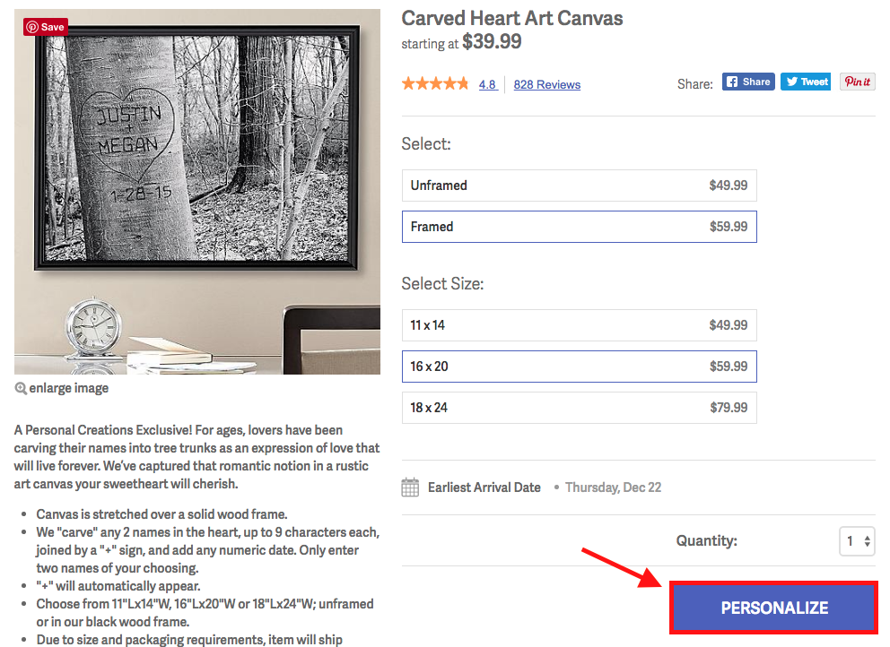
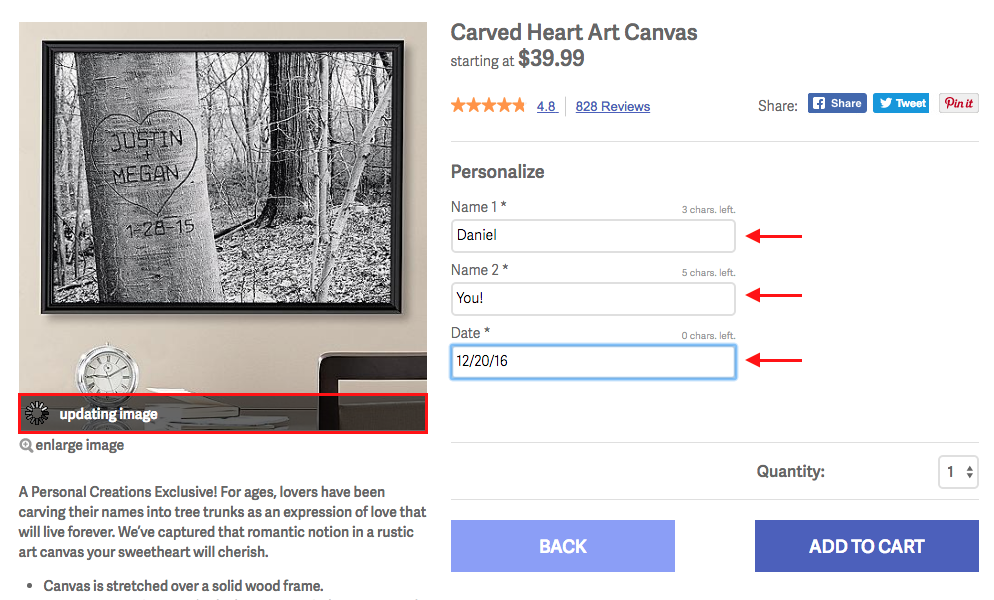
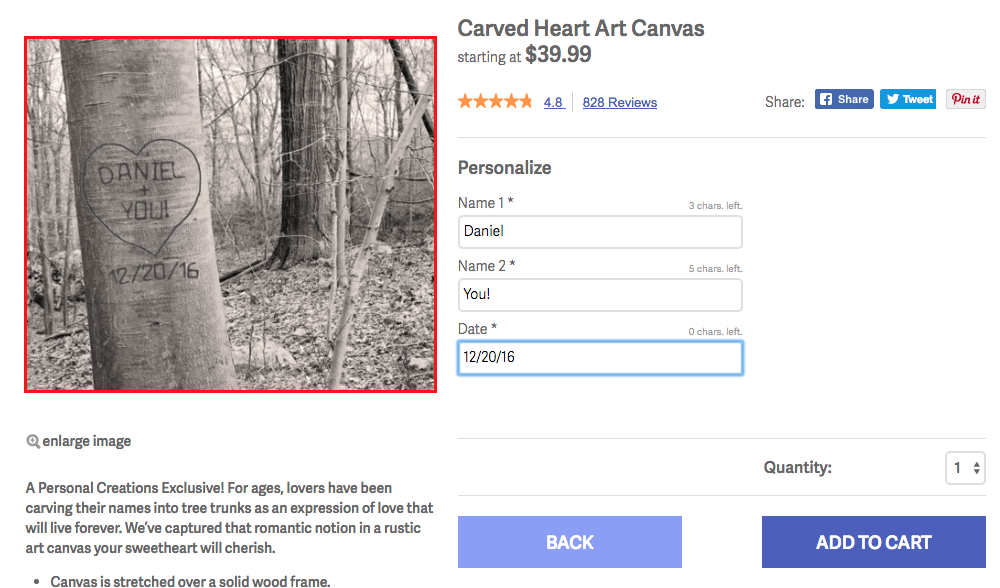
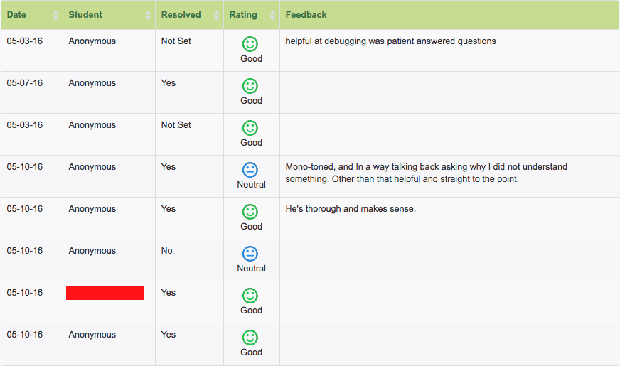
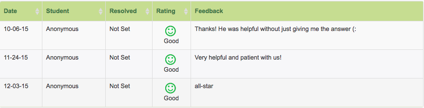
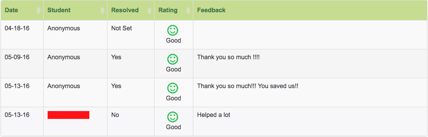

Used Selenium WebDriver to construct a tester program for every brand website, allowing testing cycle to be shorter and more reliable
Developed a custom image preview function that merges product image with user’s customization image to preview fully customized product before purchase using Adobe Scene 7 API
show example



Reconstructed several brand websites with Backbone.js and mustache template for better reliability
Teaching
CSE 8B - Introduction to Computer Science: Java II
show feedback

CSE 30 - Computer Organization and Systems Programming
CSE 100 - Advanced Data Structuresshow feedback

